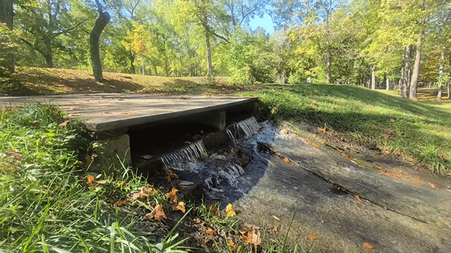
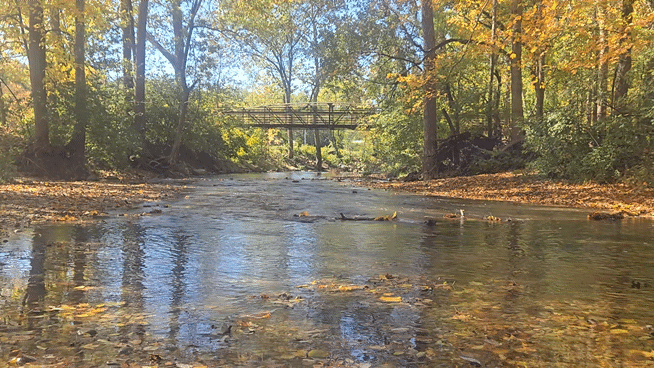

(10 min. read)
I make the world worse every day that I am allowed to draw breath. I am one part of a despicable wretched class choking the life from this beautiful land called America. Our blood is iron and sulfur. Our teeth, jagged and grinding. Where we turn our eyes spoils and rots, bubbling with contagion, spewing miasma. You may have met someone like me before, maybe you were at a party. There’s a man here. He seems nice enough. You approach him. You strike up conversation. He describes something strange to you. He’s very insistent that he tells you the difference between Actual Grace and Sanctifying Grace. Huh. You’re not really interested so you try to pivot to another topic. Your pivot fails and now he’s describing what a purificator is and how you can’t use it as a corporal cloth at Mass. Those are both just white cloths though right? Whatever. Your eyes slide over to the door, maybe you can make a break for it? But it’d be rude to just leave. What is he talking about now? Hyperdulia? Latria? Oh, wait. He needs to grab his Missal to show you an example. Now’s your chance. You move through the exit into the cold night air.
Outside there’s someone else. He’s crouching over a pile of logs. Oh no. You’ve walked into the snare of another one. He’s now explaining proper fire making techniques. Oh brother. It’s just firemaking. It’s not some masculine black magic. Don’t tell me he’s gonna start talking about grilling next. Is that someone else walking up? You blurt out in a panic “Oh hey how are you?” The new person pauses. He blinks, and launches into describing the Scott Hahn book he was reading today.
Overconfidant young Catholic men. Our purpose in life is to tell you facts, dispense unasked-for wisdom, or tell you about some rule the church has. Ultimately our problem is probably how agonizingly practical we are. There’s always something concrete and practical for us to talk about. We rarely have time for the beautiful and sublime. Next time you meet someone like us, just wait. Wait and see how long it takes him to solve a problem or tell you a fact.
“You know, technically you’re not supposed to…”
“You know the church used to do it this way…”
“Priest’s don’t follow this rule, but according to the Missal they need to…”
I think I have this bitterness because, of all these offenders, I am the first and greatest. If I'm going to write about faith I need to limit myself. I want to be different than I am. I want to talk about beauty. I’m not Catholic because I heard the most interesting fact or liked some rule. I’m Catholic because I found someone I’m madly in love with; I fell in love with Christ.
So here’s a rule for this blog, inspired by old school RPG blogger Joesky. Every spiritual post must be about something beautiful. If I have finished a post and all I've done is offer advice or give facts, I’ll end meditating on a poem.
And guess what? This post is about a rule so I’m starting immediately. Post is over. Now for the poem that’s actually pretty topical.
by Gerard Many Hopkins

Hopkins can be hard to read, so here's a summary of the poem: The poet is addressing a child (Margaret) transfixed by how a tree changes color in fall. She is awestruck by its beauty. The poet sadly says she won’t always react to the tree like this. When she’s older she’ll walk past these trees and not even spare a thought for it. The poet continues grieve this loss of wonder further. When these feelings are gone Margaret will “will weep and know why.”
Márgarét, áre you gríeving
Over Goldengrove unleaving?
Leáves like the things of man, you
With your fresh thoughts care for, can you?
Ah! ás the heart grows older
It will come to such sights colder
By and by, nor spare a sigh
Though worlds of wanwood leafmeal lie;
And yet you wíll weep and know why.
Now no matter, child, the name:
Sórrow’s spríngs áre the same.
Nor mouth had, no nor mind, expressed
What heart heard of, ghost guessed:
It ís the blight man was born for,
It is Margaret you mourn for.
If you’ve never read Hopkins I recommend reading the poem aloud. While I think this poem’s flow is a little awkward compared to the rest of his work, in general I think his work shines best when heard aloud.

Anyone with children in their life has a story of a child being very profound while looking at something simple. So it's fitting the poet doesn't use the name of a real tree species. With “goldengrove” Hopkins isn’t tying himself down to any concrete flaws a real tree would have. The child is solely focused on the beauty and wouldn't notice any flaws. What tree did you imagine? Picture a goldengrove in your mind. Isn’t it wonderful? That's what the child seens with their "fresh thoughts". It’s almost a cliche in movies when a child says something shockingly insightful that makes all the adults pause. Now adults may just be jaded because we’ve seen this stuff before, but this is more profound than that. The simpler life of a kid means they can see through a veil that more weathered eyes can’t. I know it’s something more because we wouldn’t mourn it so deeply if it was just novelty.

An adult could walk through a “world” of leaves on the ground (wanwood leafmeal) without any emotion. How could we insist that we see the world more clearly if that's how we react to it? It’s as if we see the world in black and white. Remember when Christ told us to be “childlike” in our faith? (Mt 18:2-3) It’s easy to read "childlike" as just "trusting": Live reliant on God like a child relies on their parents. But there's more to it. God speaks to us constantly, calling out to be in communion with us. This childlike vision allows us to see God's hand in everything. Wouldn't that be such a more intiment relationship with God? Being able to sit with him and see the world more fully.

Is it possible to recapture part of this wonder and awe? The poem implies no. “It is the blight man was born for.” But what if we really tried? Take time intentionally to be in nature. Walk through the park. Canoe down a river. Sit and watch the birds out our window. But being transfixed by this will never come as easy as it was, and it’ll never be as intense as it was as children. However I do wonder, maybe as we age we do naturally recapture it? I see retired men with bad backs still going out to fish. I see women with walkers still walking to watch birds. A child is not distracted by life so they can see through the mundane veil. Then as young adults and in middle age we are too busy running around to see it. But once we get toward the end of our life, the things that aren’t important seem to fall away. We focus more on what's important in life: and beauty has to be up there in terms of importantce.

Maybe when I retire I'll start to see through that veil that eluded me. Or maybe when I reach that age what will change is my priorities.It won't be any easier, but i'll be fighting harder to find it.